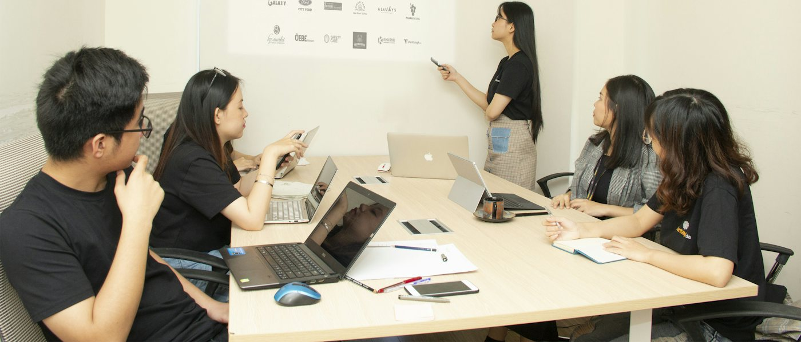
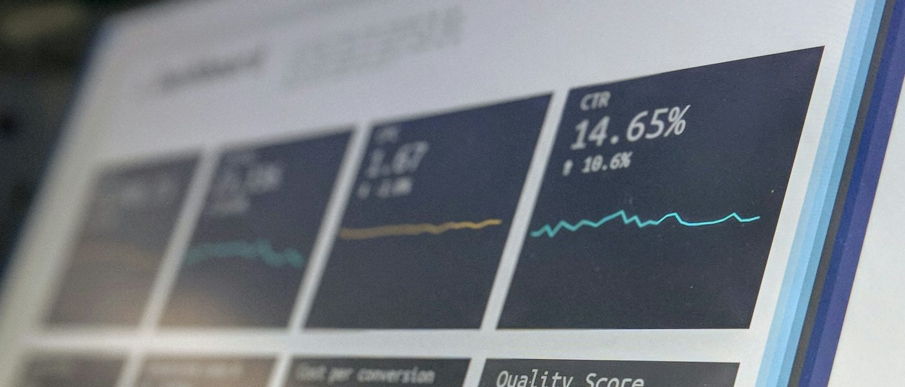
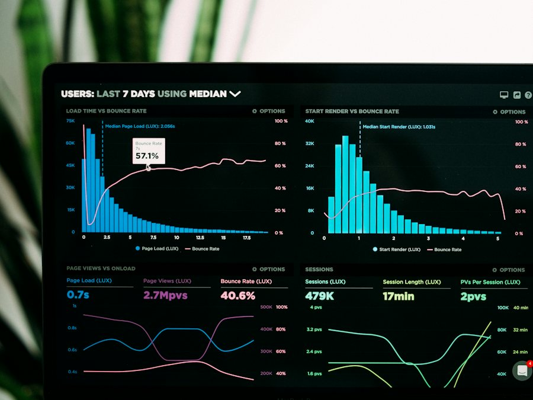

Google Sheets + Apps Script
Weekly business review robot
Cleans messy order, ticket and ad exports, builds the weekly KPIs, flags what moved and emails a PDF every Monday at 8am.

Analytics & BI Manager · Remote
I lead analytics teams that turn operations data into decisions, through reporting, dashboards, automated pipelines and AI. Currently leading a global data analytics team at Accenture, fully remote.
Years in reporting & analytics
8+
After 6 years in frontline operations
E-commerce dashboard · net revenue
$182K
Aug 2026
FTEs in capacity planning
1,000+
Manila shared services, Citi
Staff trained to use AI
100+
Daily adoption 83% → 96%
Open to remote Analytics & BI Manager roles
Hiring a remote analytics lead? Let's talk.
Available for US and Australia / NZ hours
Skills
Samples
Working samples built for a made-up Australian store, so you can see how I build without me sharing any employer's data.
Google Sheets + Apps Script
Cleans messy order, ticket and ad exports, builds the weekly KPIs, flags what moved and emails a PDF every Monday at 8am.
Web tool + Excel / Google Sheets
Turns a half-hourly call forecast into agents needed and hours to schedule, with a real-time tracking and adherence workbook.
Web page + Google Doc
15 ready-to-use prompts for reporting, customer replies, data cleanup and SOPs, with rules on what never goes into an AI tool.
Google Docs + Sheets
A refund and returns SOP, a 90-day onboarding checklist for remote hires, and a weekly KPI scorecard that flags what's off track.
Projects
Hover or tap a result to see what's behind the number.

AI enablement & workforce upskilling program
Founded and led a department-wide program that turned 100+ global operations staff, from entry-level analysts to leadership, into confident AI users working within strict governance rules.
Designed and ran the program end to end across 5 operational sub-teams.
Cut routine reporting and data-formatting setup time by 30%.
Set pre- and post-training benchmarks to prove impact, not assume it.

AI-driven reporting automation for global vendor operations
Led the design and rollout of automated BI and reporting for global vendor operations, replacing manual, error-prone workflows with deterministic, auditable pipelines.
End-to-end pipelines in Google Apps Script with AI-assisted cleaning, kept human-in-the-loop.
One set of metric definitions and one submission schedule for every vendor site.
Managed analysts across capacity and leave planning, scorecards and process documentation.
SQL → Python → Looker Studio, plus a vibe-coded version
An end-to-end BI build for a fictional US online retailer. SQL pulls the data from a six-table source database, Python cleans it, and Looker Studio presents it. The dataset is synthetic and built to behave like real data, messy source systems included.
| Month | Net revenue |
|---|
Joins six tables and uses a window function to flag each customer's first order.
Fixes 8 types of data issues across 45,736 orders, then validates the output.
Built in Looker Studio, then vibe-coded with AI into a version that leads with written insights.
Experience
From today back to 2009. Drag, swipe or use the arrows.
Accenture
Citibank N.A. – ROHQ
Optum Global Solutions
Optum Global Solutions
Optum Global Solutions
Optum · JPMorgan Chase · Convergys · Sutherland
University of the East Caloocan
About
I started in 2012 as a customer service representative. Over the next six years I worked support and operations roles at Convergys, JPMorgan Chase and Optum, and in 2018 I moved into reporting.
Since then I've stayed on the analytics side: running workforce management platforms, automating billing with VBA, planning capacity for 1,000+ FTEs at Citi, and now leading a global analytics team at Accenture. Having worked the floor, I build reports for the people who actually use them.

Contact
I'm open to remote Analytics & BI Manager roles, working US or Australia / NZ hours. Book a 30-minute call, or reach me by email or LinkedIn.